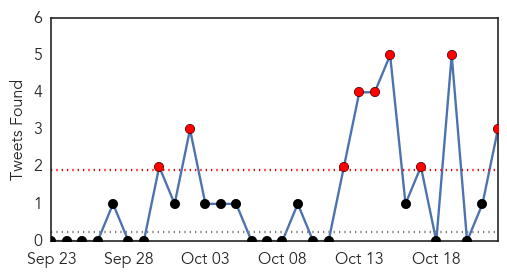
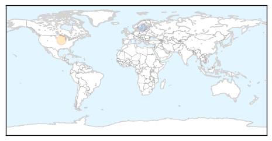
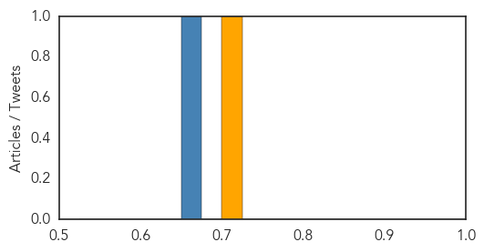

Cholera
30-Day Web Trend
2 alerts, 0 warnings

30-Day Twitter Trend
9 alerts, 1 warnings

Article Locations

Article Confidences

Top Articles:
Top Tweets:
- 0.947
- Iraq's cholera outbreak exceeds 1,800 cases: health ministry https://t.co/2Nq70Kkldj via
- 0.800
- RT: World Health Organization shipping half a million doses of cholera vaccine to Iraq https://t.co/SM0UyFOSqH
- 0.711
- RT: Worth a read: "As Cholera Resurges in Haiti, the UN’s Commitment to Prevent It Fails" by https://t.co/gLBdPQ3dzi
Influenza
30-Day Web Trend
6 alerts, 7 warnings

30-Day Twitter Trend
0 alerts, 0 warnings

Article Locations
Article Confidences
Top Articles:
Top Tweets:
- 0.830
- Influenza A(H3N2), A(H1N1)pdm09 & type B viruses co-circulating during 2014-15 influenza season. Read ECDC report https://t.co/lSbbtamkoA
- 0.554
- BMJ: Severe post-influenza (H1N1) encephalitis involving pulvinar nuclei in an adult patient https://t.co/mvRTn41sIj https://t.co/lCICxa83Vl